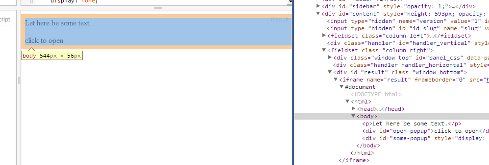

$(document) vs $('body') - a (subtle) difference
While working on the site, and creating a very simple popup that closes when I click anywhere, I ran into a problem.
$('#open-popup').click(function(){
$('#some-popup').fadeIn();
$('body').one('click', function(){
$('#some-popup').fadeOut();
});
return false;
});
Looks good? Indeed it was. Until when placed in my game pages. The problem is demostrated here.
Try to click the popup, it closes, good!
Try to click the texts behind, it closes, good!
Try to click the empty space around the popup, ouch. In Chrome 30 and Firefox 24, it does not close.
It is because the body does not span the entire window area.  element does not span entire page." title="In inspector, we see the
element does not span entire page.">
It becomes a problem in my game pages, when the body is just a line of text because all other elements are placed absolutely or fixedly. (i.e. with position: absolute; or position: fixed;) and taken out of the flow. And when I say it is taken out of the flow, it no longer contribute to the body. And $('body') only consider that small piece of text, not the entire window.
To fix this, just use $(document), as demostrated here.
$('#open-popup').click(function(){
$('#some-popup').fadeIn();
$(document).one('click', function(){
$('#some-popup').fadeOut();
});
return false;
});
While in most cases $('body') seems to be the same as $(document), they are not always so.